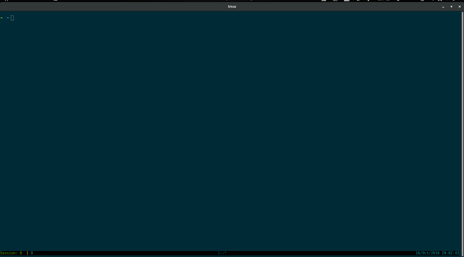

Tmux - 远程工作的瑞士军刀
tmux 是一个优秀的终端复用软件, 是 BSD 下的 Screen 的替代品. 相对于 Screen，tmux 更加先进：支持屏幕切分，而且具备丰富的命令行参数，使其可以灵活、动态的进行各种布局和操作。
目录
为什么用 tmux?
当你登录到远程终端, 经常发现，一个终端远远地不够用，经常需要同时打开几个，往往还希望这几个窗口同时显示在视线内。而 tmux 正是为这种需求而生。通过一个终端登录远程主机并运行 tmux 后，在其中可以开启多个控制台而无需再“浪费”多余的终端来连接这台远程主机.
与 screen 相比,tmux 可以横向和纵向分割窗口，且窗格可以自由移动和调整大小。可在多个缓冲区进行复制和粘贴，支持跨窗口搜索；非正常断线后不需重新 detach…
tmux 简直是程序员的福音…
获取 tmux
一般 linux 发行版都有 tmux 包, 可以安装很方便的安装.
#fedora
sudo dnf -y install tmux
#or
sudo yum -y install tmux
#opensuse
sudo zypper in tmux
#ubuntu/debian
sudo apt-get install tux
Mac 可以用 brew 或 macports 安装.
#brew
brew install tmux
#macports
sudo port install tmux
也可以手动编译安装, 可以从 这里 下载安装. tmux 依赖 libevent, 所以也一并装了吧, 到 这里 下载.
tmux 初体验
安装 tmux 之后, 运行 tmux 就进入了 tmux 环境 ((⊙ o ⊙) 啊!!!). 和普通的 Terminal 没什么不同， 除了底部有一个状态栏.

tmux 修改配置
tmux 的配置文件是$HOME/.tmux.conf
默认的配置感觉不方便, 可自己修改. 下面是博主的配置
#### Global Key-mapping
#tmux 默认控制键是 Ctrl-b (C-A or ^b), 可以修改为 ^a
set -g prefix ^a
#设置全局的按键模式为 vi 模式
setw -g mode-keys vi
# 鼠标滚轮滚屏, 如果需要.
# setw -g mode-mouse on
#
# Options
set-option -g base-index 1
set-option -g display-time 1000
set-option -g repeat-time 500
set-option -g status-keys vi
# 修改配置文件后按 ^br 载入配置文件
bind r source-file ~/.tmux.conf
set -g default-terminal "screen-256color"
set -g status-utf8 on
set -g pane-border-fg green
set -g pane-active-border-fg white
set -g message-fg white
set -g message-attr bright
set -g status-fg white
set -g status-bg black
setw -g window-status-fg cyan
setw -g window-status-bg default
setw -g window-status-attr dim
setw -g window-status-current-fg cyan
setw -g window-status-current-bg default
setw -g window-status-current-attr dim
set -g status-left-length 40
set -g status-left "#[fg=green]Session: #S #[fg=yellow] #I #[fg=cyan]#P"
set -g status-right "#[fg=cyan]%d/%b/%Y #(date +%H:%M:%S'')"
set -g status-interval 2
set -g status-justify centre
setw -g monitor-activity on
set -g visual-activity on
####Windows
#垂直分割窗口
unbind '"'
bind - splitw -v
#横向分割窗口
unbind %
bind = splitw -h
#上下左右移动活动窗口
bind k selectp -U
bind j selectp -D
bind h selectp -L
bind l selectp -R
# Windows Size: 调节窗口大小
bind ^k resizep -U 2
bind ^j resizep -D 2
bind ^h resizep -L 2
bind ^l resizep -R 2
# Swap Windows: 交换窗口
bind ^u swapp -U
bind ^d swapp -D
tmux 常用命令
# 新建 tmux 会话
tmux
#查看 tmux 会话
tmux ls
#or 在 tmux 内查看
C-b s
#attach 到某一会话
tmux a -t 1
#从 tmux 中 detach 会话
C-b d
水水更健康 .(*￣︶￣)y